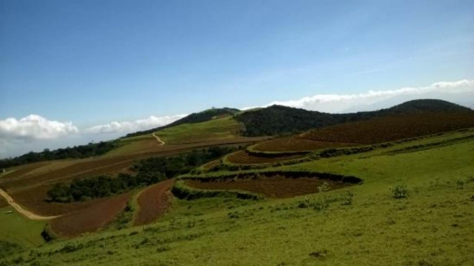
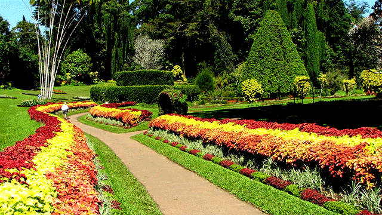
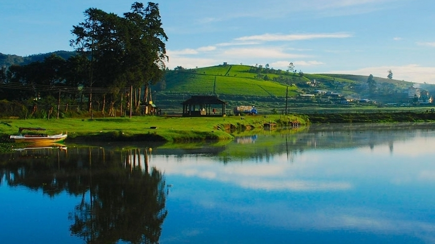
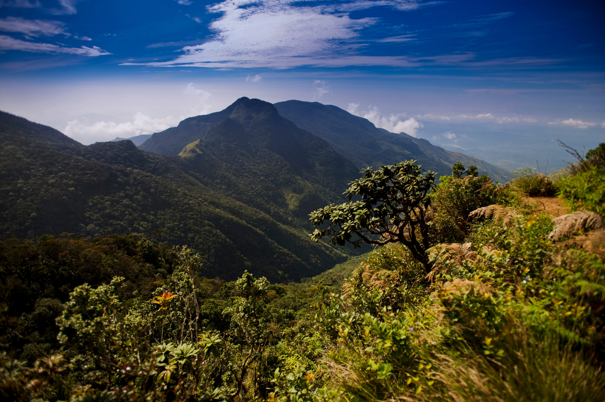

NUWARA ELIYA
One of the best tourist places to be visited in Sri Lanka! It is also known as "The mini London of Sri Lanka". Whereas it is also known well in Sri Lanka for its great scenic beauty. For the people who are nature lovers- this countryside place is the perfect place for you to enjoy your vacation. And don't forget to collect some sweet souvenirs from Nuwara Eliya as memories back home!
Places you can visit in Nuwara Eliya,
1. Moon Plains –
The moon plains is well known for its beautiful view, a lovely place for travelers to relax and breathe in some fresh air. This place consists of a huge area of plain land with green grass, located in the center of tea estates, forest reserves and mountains.
Entry fee = free
2. Victoria Park –
It is known as the " Best maintained park in South Asia ", and a quiet place where visitors would love to relax during their holidays. It has lawns and also a playground for kids.
Entry fee = LKR 130/-
3. Pedro Tea Estate –

If you are a tea lover then this is a great place to be a visited to check out how the process is executed in manufacturing a cup of tea. This place is also considered as an educational place for kids. People are allowed to check out the plantation sites.
Entry fee = LKR 90/-
4. Gregory Lake –
Is it a vacation with your family ? - then don't forget to set up a picnic at this place! Kids would enjoy the activities such as the paddle boats, jet ski rides, and horse riding.
Entry fee = LKR 200/-
5. Hike to world's end and Horton plains national park -
Horton Plains National Park is a huge, park situated 30km outside of Nuwara Eliya.
It is a beautiful park. but visiting Horton's Plain will cost a lot.
TRIP - Tuk Tuk or van to get there, will cost 4 500 LKR ($25) for the 1.5-hour trip
TIME - leave Nuwara Eliya before 06:00 so that you can make it up before the sunrise.
Entry fee = LKR 4000/-